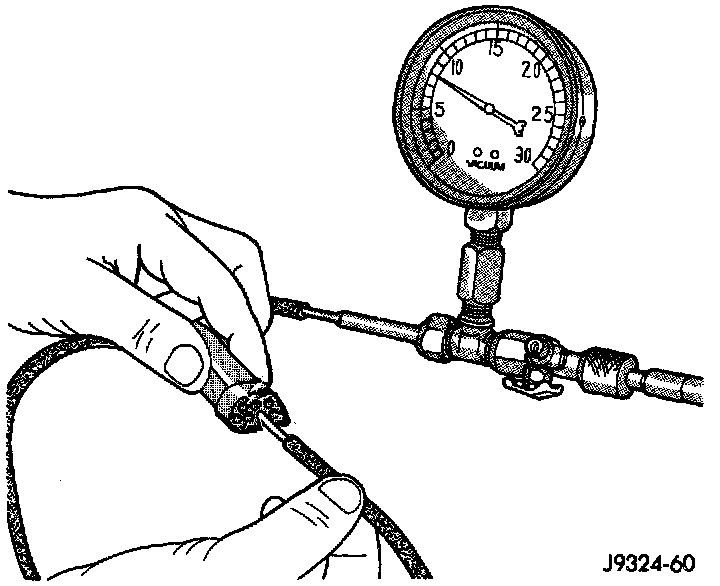
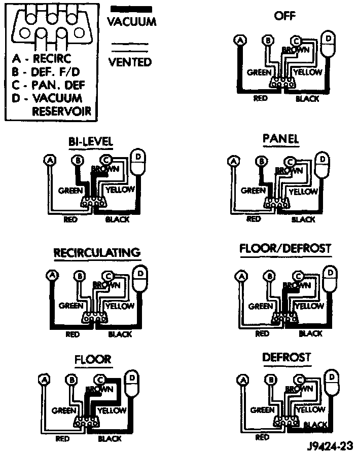

Locating Vacuum Leaks
WARNING: ON VEHICLES EQUIPPED WITH AIR-BAGS, REFER TO AIRBAGS SYSTEMS BEFORE ATTEMPTING ANY STEERING WHEEL, STEERING COLUMN, OR INSTRUMENT PANEL COMPONENT DIAGNOSIS OR SERVICE. FAILURE TO TAKE THE PROPER PRECAUTIONS COULD RESULT IN ACCIDENTAL AIRBAG DEPLOYMENT AND POSSIBLE PERSONAL INJURY.
1. Disconnect the vacuum harness connector from the back of the heater-A/C mode control switch on the control panel.
Vacuum Circuit Test:

2. Connect the test set vacuum hose probe to each port in the vacuum harness connector, one at a time, and pause after each connection. The test set gauge should return to the 27 kPa (8 in. Hg.) setting shortly after each connection is made. If OK, replace the faulty mode control switch. If not OK, go to Step 3.
Vacuum Circuits:

3. Determine the vacuum line color of the vacuum circuit that is leaking. To determine the vacuum line colors, refer to the Vacuum Circuits chart.
4. Disconnect and plug the vacuum line from the component (fitting, actuator, valve, switch, or reservoir) on the other end of the leaking circuit. Instrument panel disassembly or removal may be necessary to gain access to some components.
5. Connect the test set hose or probe to the open end of the leaking circuit. The test set gauge should return to the 27 kPa (8 in. Hg.) setting shortly after each connection is made. If OK, replace the faulty disconnected component. If not OK, go to Step 6.
6. To locate a leak in a vacuum line, leave one end of the line plugged and connect the test set hose or probe to the other end. Run your fingers slowly along the line while watching the test set gauge. The vacuum reading will fluctuate when your fingers contact the source of the leak. To repair the vacuum line, cut out the leaking section of the line. Then, insert the loose ends of the line into a suitable length of 3-mm (1/8-inch) inside diameter rubber hose.